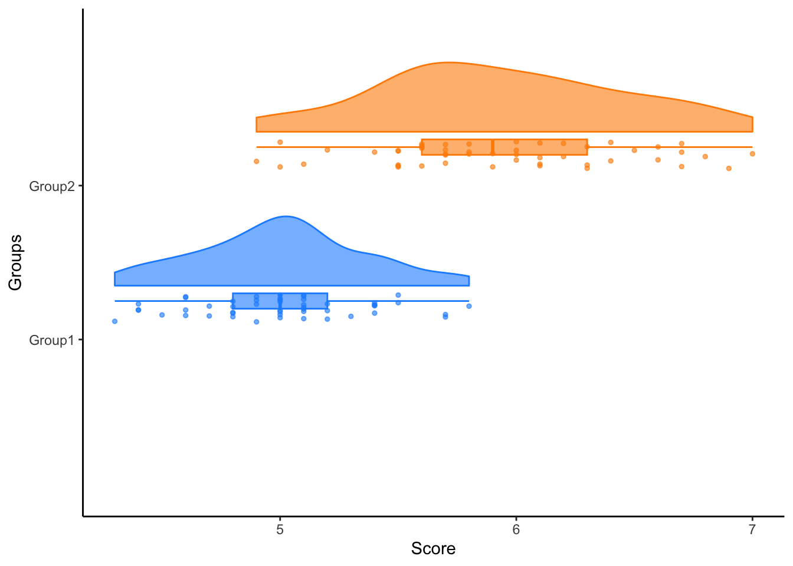
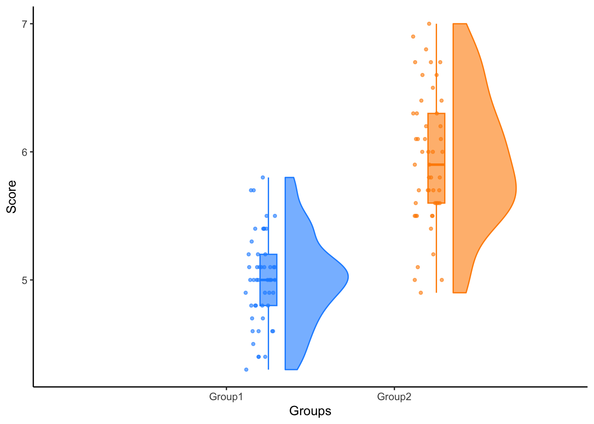
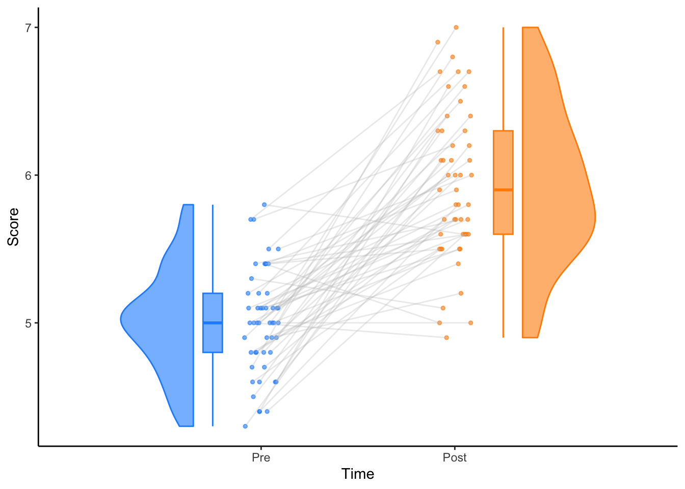
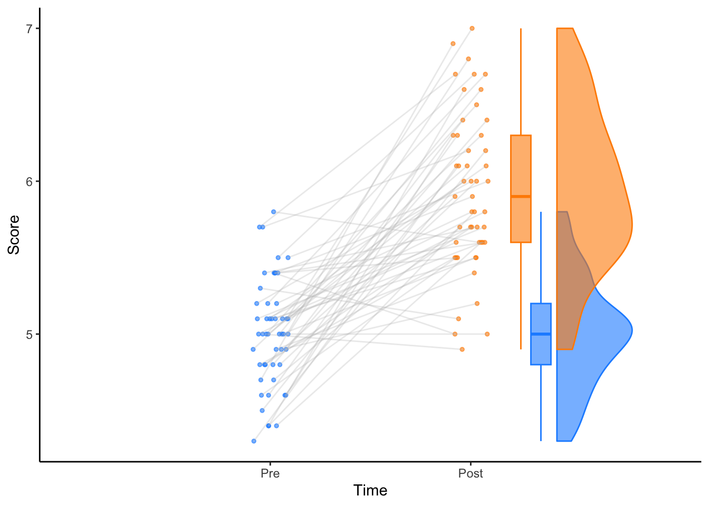
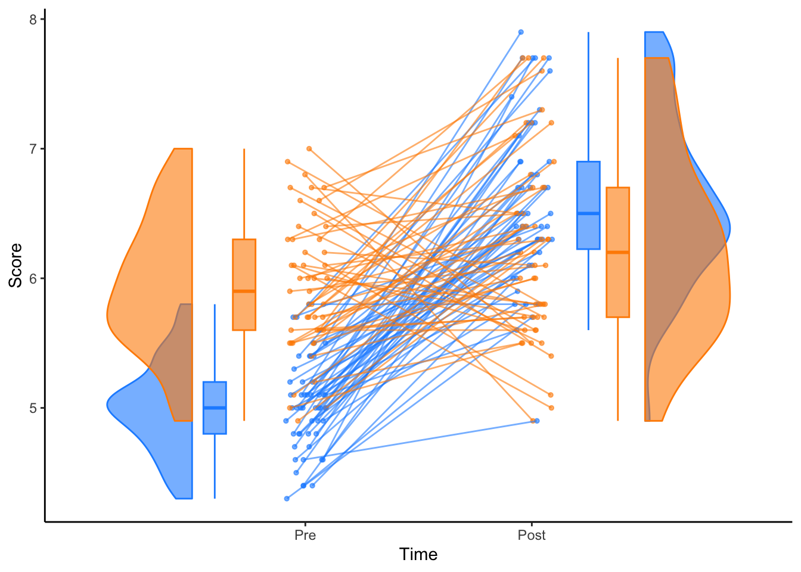
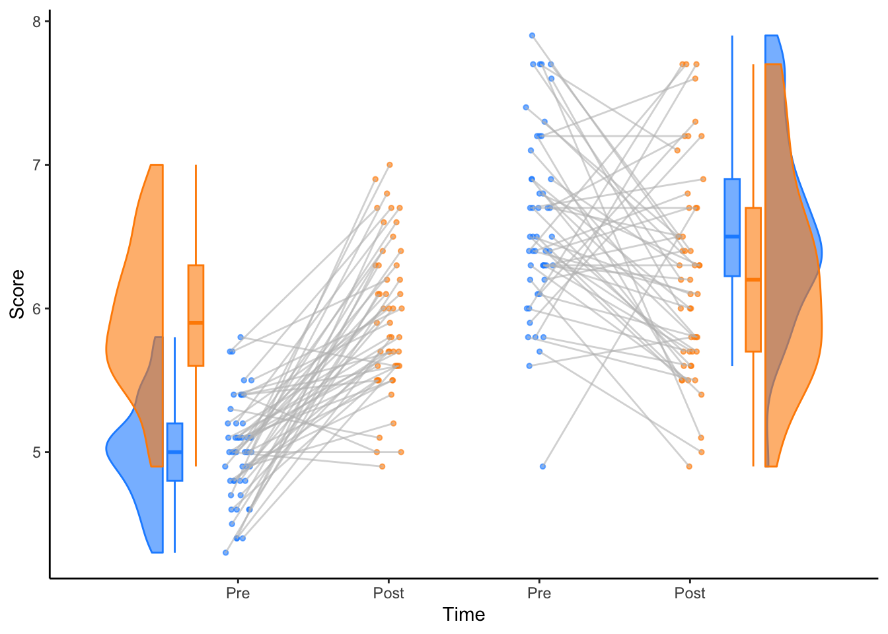
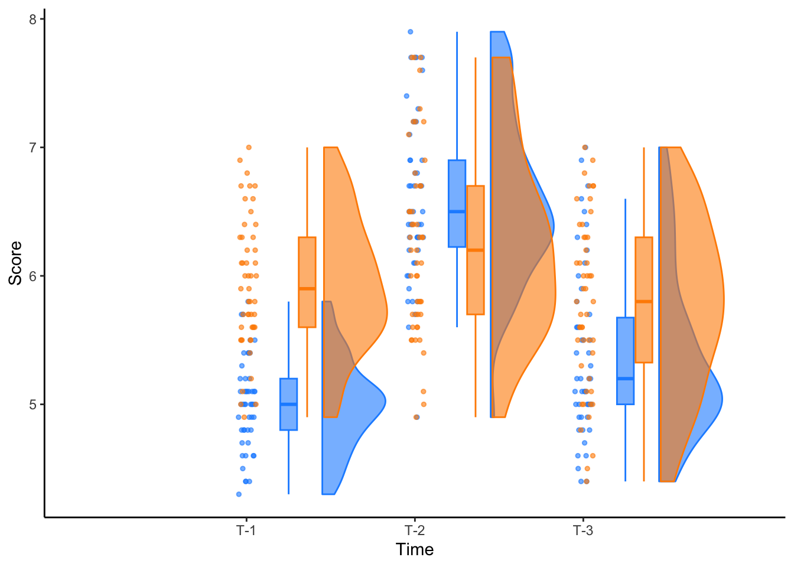
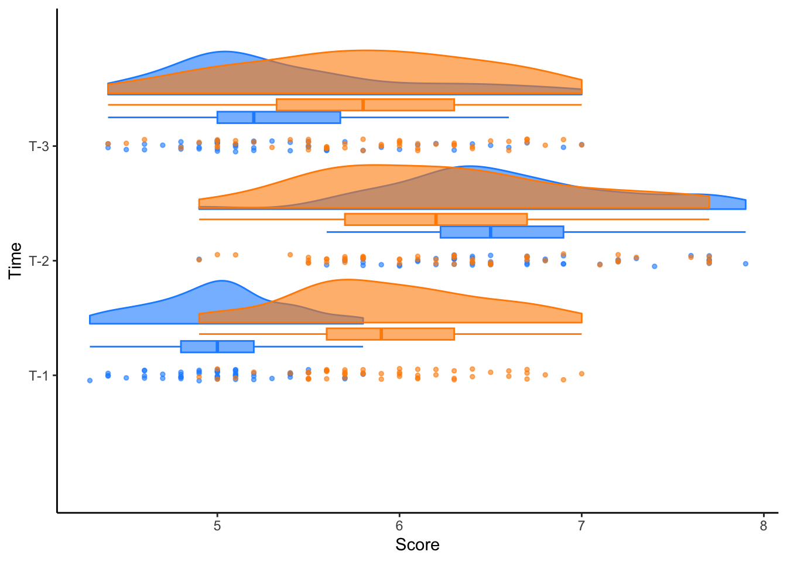

library(tidyverse)
library(raincloudplots)
library(ggplot2)raincloudplots
This vignette demonstrates the different types of raincloudplots that one can make with this package.
Background
We have developed this package to visualize data in rainclouds, which are, for instance, suited for repeated measures data.
- It all started with the pre-print of raincloudplots in 2019 and accompanying GitHub repository RainCloudPlots
- In the beginning of 2020, a tutorial called ‘open-visualizations’ was released and turned out to be a valuable addition to the previously published pre-print. This tutorial provides detailed and extensive R code to create robust and transparent repeated measures visualizations, by showing the slope change for each individual data point over time. To date (30-11-2020), this tutorial has been cited in 15 scientific papers. However, using this tutorial requires sufficient R programming knowledge and might therefore not be suitable for non-R experts.
- Therefore, we have created this dedicated raincloudplots package. This package is tailored towards easy visualization of grouped and repeated measures data. Moreover, it also provides individually linked repeated measures visualizations, which add detail and richness to a multitude of between/within-subject designs. Researchers that would like to visualize more complex repeated measures designs, for instance with more groups and more time-points, please see our extensive tutorials:
data_1x1
data_1x1creates the long-format data.frame that is needed for 1-by-1 rainclouds.array_1the first array of datapoints to be plottedarray_2the second array of datapoints to be plottedjit_distancethe amount of distance between jittered datapoints (0.9 by default)jit_seedthe amount used in set.seed() (321 by default)
The first example uses the
iris$Sepal.Length[1:50]dataset, which produces the following vectors
glimpse(iris$Sepal.Length[1:50])
#> num [1:50] 5.1 4.9 4.7 4.6 5 5.4 4.6 5 4.4 4.9 ...
glimpse(iris$Sepal.Length[51:100])
#> num [1:50] 7 6.4 6.9 5.5 6.5 5.7 6.3 4.9 6.6 5.2 ...df_1x1 <- data_1x1(
array_1 = iris$Sepal.Length[1:50],
array_2 = iris$Sepal.Length[51:100],
jit_distance = .09,
jit_seed = 321)
head(df_1x1)
#> y_axis x_axis id jit
#> 1 5.1 1 1 1.0820609
#> 2 4.9 1 2 1.0787114
#> 3 4.7 1 3 0.9528797
#> 4 4.6 1 4 0.9559133
#> 5 5.0 1 5 0.9802922
#> 6 5.4 1 6 0.9714124
tail(df_1x1)
#> y_axis x_axis id jit
#> 95 5.6 2 45 2.059387
#> 96 5.7 2 46 2.004848
#> 97 5.7 2 47 2.066980
#> 98 6.2 2 48 2.074479
#> 99 5.1 2 49 1.939248
#> 100 5.7 2 50 1.999004raincloud_1x1
raincloud_1x1creates the 1-by-1 comparison for grouped data.datathe data.frame created withdata_1x1colorsconcatenated string for both colorsfillsconcatenated string for both both fillssizesize of the dataalphaalpha of the dataortvertical or horizontal display of rainclouds
raincloud_1_h <- raincloud_1x1(
data = df_1x1,
colors = (c('dodgerblue','darkorange')),
fills = (c('dodgerblue','darkorange')),
size = 1,
alpha = .6,
ort = 'h') +
scale_x_continuous(breaks=c(1,2), labels=c("Group1", "Group2"), limits=c(0, 3)) +
xlab("Groups") +
ylab("Score") +
theme_classic()
raincloud_1_h
raincloud_1_v <- raincloud_1x1(data = df_1x1,
colors = (c('dodgerblue','darkorange')),
fills = (c('dodgerblue','darkorange')),
size = 1,
alpha = .6,
ort = 'v') +
scale_x_continuous(breaks = c(1,2), labels = c("Group1", "Group2"), limits = c(0, 3)) +
xlab("Groups") +
ylab("Score") +
theme_classic()
raincloud_1_v
raincloud_1x1_repmes
raincloud_1x1_repmescreates a 1-by-1 repeated measures raincloud.datathe data.frame created withdata_1x1colorsconcatenated string for both colorsfillsconcatenated string for both fillsline_colorcolor of the linesline_alphaalpha of the linessizesize of the dataalphaalpha of the dataalign_cloudsFALSE if spreaded on different x-axis ticks, TRUE if aligned on same x-axis tick
raincloud_2 <- raincloud_1x1_repmes(
data = df_1x1,
colors = (c('dodgerblue', 'darkorange')),
fills = (c('dodgerblue', 'darkorange')),
line_color = 'gray',
line_alpha = .3,
size = 1,
alpha = .6,
align_clouds = FALSE) +
scale_x_continuous(breaks=c(1,2), labels=c("Pre", "Post"), limits=c(0, 3)) +
xlab("Time") +
ylab("Score") +
theme_classic()
raincloud_2
raincloud_2_aligned <- raincloud_1x1_repmes(
data = df_1x1,
colors = (c('dodgerblue', 'darkorange')),
fills = (c('dodgerblue', 'darkorange')),
line_color = 'gray',
line_alpha = .3,
size = 1,
alpha = .6,
align_clouds = TRUE) +
scale_x_continuous(breaks=c(1,2), labels=c("Pre", "Post"), limits=c(0, 3)) +
xlab("Time") +
ylab("Score") +
theme_classic()
raincloud_2_aligned
data_2x2
data_2x2creates the long-format data.frame needed for 2 x 2 repeated measures rainclouds.array_1the first array of datapoints to be plottedarray_2the second array of datapoints to be plottedarray_3the array of datapoints to be plottedarray_4the array of datapoints to be plottedarray_5the array of datapoints to be plotted (OPTIONAL: only needed for 2x3 repeated measures, see below)array_6the array of datapoints to be plotted (OPTIONAL: only needed for 2x3 repeated measures, see below)labelsconcatenated string of both group labelsspread_x_ticksFALSE if 2 x-ticks, TRUE if 4 x-ticksjit_distancethe amount of distance between jittered datapoints (0 by default)jit_seedthe amount used in set.seed() (321 by default)
df_2x2 <- data_2x2(
array_1 = iris$Sepal.Length[1:50],
array_2 = iris$Sepal.Length[51:100],
array_3 = iris$Sepal.Length[101:150],
array_4 = iris$Sepal.Length[81:130],
labels = (c('congruent','incongruent')),
jit_distance = .09,
jit_seed = 321,
spread_x_ticks = FALSE)
head(df_2x2)
#> y_axis x_axis id group jit
#> 1 5.1 1 1 congruent 1.0820609
#> 2 4.9 1 2 congruent 1.0787114
#> 3 4.7 1 3 congruent 0.9528797
#> 4 4.6 1 4 congruent 0.9559133
#> 5 5.0 1 5 congruent 0.9802922
#> 6 5.4 1 6 congruent 0.9714124
tail(df_2x2)
#> y_axis x_axis id group jit
#> 195 6.7 2.01 45 incongruent 2.056353
#> 196 7.2 2.01 46 incongruent 1.975210
#> 197 6.2 2.01 47 incongruent 2.011292
#> 198 6.1 2.01 48 incongruent 2.013551
#> 199 6.4 2.01 49 incongruent 1.961014
#> 200 7.2 2.01 50 incongruent 2.086574df_2x2_spread <- data_2x2(
array_1 = iris$Sepal.Length[1:50],
array_2 = iris$Sepal.Length[51:100],
array_3 = iris$Sepal.Length[101:150],
array_4 = iris$Sepal.Length[81:130],
labels = (c('congruent','incongruent')),
jit_distance = .09,
jit_seed = 321,
spread_x_ticks = TRUE)
head(df_2x2_spread)
#> y_axis x_axis id group jit
#> 1 5.1 1 1 congruent 1.0820609
#> 2 4.9 1 2 congruent 1.0787114
#> 3 4.7 1 3 congruent 0.9528797
#> 4 4.6 1 4 congruent 0.9559133
#> 5 5.0 1 5 congruent 0.9802922
#> 6 5.4 1 6 congruent 0.9714124
tail(df_2x2_spread)
#> y_axis x_axis id group jit
#> 195 6.7 4 45 incongruent 4.046353
#> 196 7.2 4 46 incongruent 3.965210
#> 197 6.2 4 47 incongruent 4.001292
#> 198 6.1 4 48 incongruent 4.003551
#> 199 6.4 4 49 incongruent 3.951014
#> 200 7.2 4 50 incongruent 4.076574raincloud_2x2_repmes
raincloud_2x2_repmescreates the 2 x 2 repeated measures raincloud.datathe data.frame created withdata_2x2colorsconcatenated string for both colorsfillsconcatenated string for both fillsline_colorcolor of the lines (Only whenspread_x_ticksTRUE)line_alphaalpha of the lines (Only whenspread_x_ticksTRUE)sizesize of the dataalphaalpha of the dataspread_x_ticksFALSE if 2 x-ticks, TRUE if 4 x-ticks
raincloud_2x2 <- raincloud_2x2_repmes(
data = df_2x2,
colors = (c('dodgerblue', 'darkorange', 'dodgerblue', 'darkorange')),
fills = (c('dodgerblue', 'darkorange', 'dodgerblue', 'darkorange')),
size = 1,
alpha = .6,
spread_x_ticks = FALSE) +
scale_x_continuous(breaks=c(1,2), labels=c("Pre", "Post"), limits=c(0, 3)) +
xlab("Time") +
ylab("Score") +
theme_classic()
raincloud_2x2
raincloud_2x2_spread <- raincloud_2x2_repmes(
data = df_2x2_spread,
colors = (c('dodgerblue', 'darkorange', 'dodgerblue', 'darkorange')),
fills = (c('dodgerblue', 'darkorange', 'dodgerblue', 'darkorange')),
line_color = 'gray',
line_alpha = .3,
size = 1,
alpha = .6,
spread_x_ticks = TRUE) +
scale_x_continuous(breaks=c(1,2,3,4), labels=c("Pre", "Post", "Pre", "Post"), limits=c(0, 5)) +
xlab("Time") +
ylab("Score") +
theme_classic()
raincloud_2x2_spread
raincloud_2x3_repmes
df_2x3 <- data_2x2(
array_1 = iris$Sepal.Length[1:50],
array_2 = iris$Sepal.Length[51:100],
array_3 = iris$Sepal.Length[101:150],
array_4 = iris$Sepal.Length[81:130],
array_5 = iris$Sepal.Length[21:70],
array_6 = iris$Sepal.Length[41:90],
labels = (c('congruent','incongruent')),
jit_distance = .05,
jit_seed = 321)
head(df_2x3)
#> y_axis x_axis id group jit
#> 1 5.1 1 1 congruent 1.0455894
#> 2 4.9 1 2 congruent 1.0437286
#> 3 4.7 1 3 congruent 0.9738220
#> 4 4.6 1 4 congruent 0.9755074
#> 5 5.0 1 5 congruent 0.9890512
#> 6 5.4 1 6 congruent 0.9841180
tail(df_2x3)
#> y_axis x_axis id group jit
#> 295 5.4 3.01 45 incongruent 3.055610
#> 296 6.0 3.01 46 incongruent 3.047695
#> 297 6.7 3.01 47 incongruent 3.058535
#> 298 6.3 3.01 48 incongruent 3.005049
#> 299 5.6 3.01 49 incongruent 2.978512
#> 300 5.5 3.01 50 incongruent 2.967493raincloud_2x3_vertical <- raincloud_2x3_repmes(
data = df_2x3,
colors = (c('dodgerblue', 'darkorange', 'dodgerblue',
'darkorange', 'dodgerblue', 'darkorange')),
fills = (c('dodgerblue', 'darkorange', 'dodgerblue',
'darkorange', 'dodgerblue', 'darkorange')),
size = 1,
alpha = .6,
ort = 'v') +
scale_x_continuous(breaks=c(1,2,3), labels=c("T-1", "T-2", "T-3"), limits=c(0, 4)) +
xlab("Time") +
ylab("Score") +
theme_classic()
raincloud_2x3_vertical
raincloud_2x3_horizontal <- raincloud_2x3_repmes(
data = df_2x3,
colors = (c('dodgerblue', 'darkorange', 'dodgerblue',
'darkorange', 'dodgerblue', 'darkorange')),
fills = (c('dodgerblue', 'darkorange', 'dodgerblue',
'darkorange', 'dodgerblue', 'darkorange')),
size = 1,
alpha = .6,
ort = 'h') +
scale_x_continuous(breaks=c(1,2,3), labels=c("T-1", "T-2", "T-3"), limits=c(0, 4)) +
xlab("Time") +
ylab("Score") +
theme_classic()
raincloud_2x3_horizontal